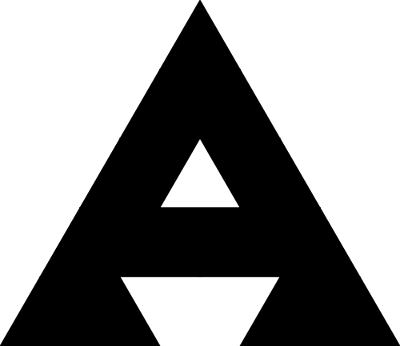
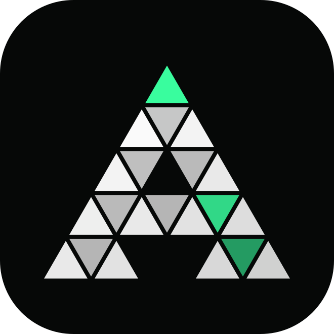
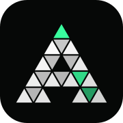
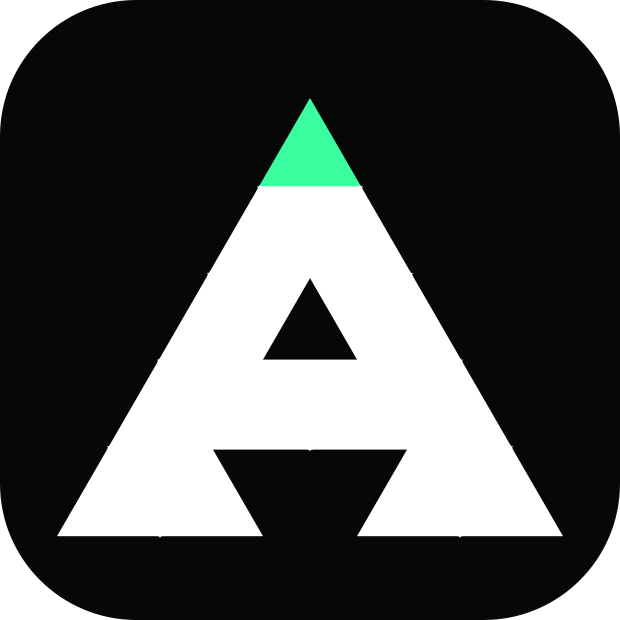
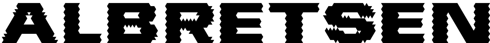
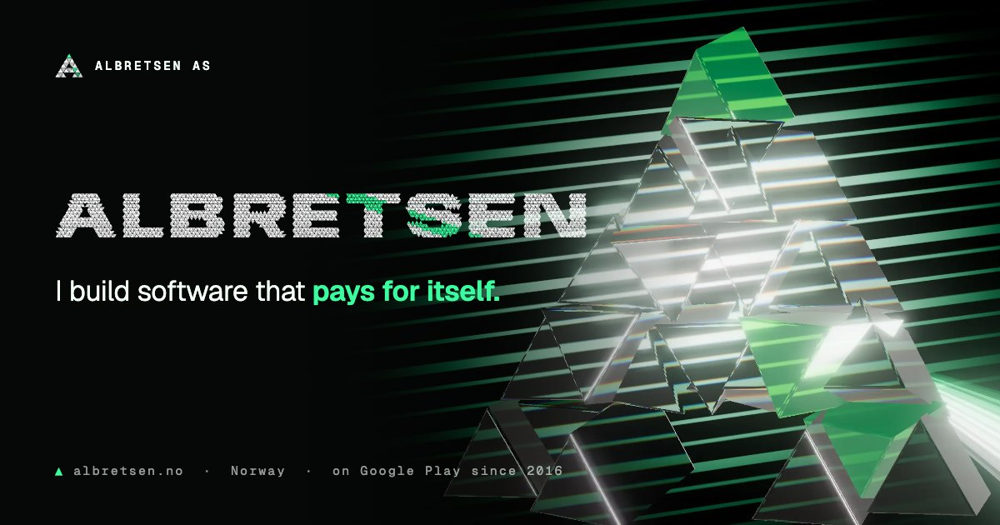
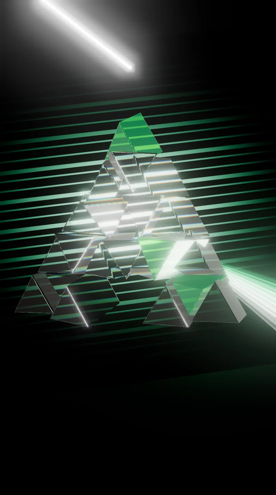

I build software that pays for itself.
Identity
The Prism A: a five-row crystal lattice with the counter and the leg gap knocked out. Light enters at the apex (mint) and exits through two facets on the right, a ray through the prism. The wordmark is ALBRETSEN set in Anybody Black Expanded and re-cut onto the same lattice, 1,900 facets.

identity/mark.svg
identity/mark-solid.svg


favicon.svg (≥48px) · favicon-small.svg + favicon-32.png (16/32) · apple-touch-icon-180.png
identity/wordmark-facets.svg
identity/wordmark-solid.svg
identity/og-image.jpgPalette
Black, white and one primary at hue 156° in OKLCH. Every photograph is graded into these three: neutral tones ramp ink to white, every saturated colour collapses into mint, so a rainbow becomes one beam.
Ink
oklch(0.12 0.005 156)
backgrounds
Ink 3
oklch(0.21 0.02 156)
raised surfaces
Paper
oklch(0.99 0.015 156)
type, light facets
Mint
oklch(0.88 0.20 156)
the beam · one per view
Type
Anybody (variable width 50–150) carries the tension: headlines stretch and compress on interaction. Geist for reading, Geist Mono for labels and the terminal voice. All from Google Fonts, OFL.
Imagery
Two hero renders made in three.js with physically based glass (transmission, dispersion), lit by a CC0 Poly Haven studio HDRI, plus two CC0 Wikimedia Commons photographs graded into the palette.

hero/crystal-a(@2x).webp · @2x.avifhero/shards(@2x).webp · @2x.avif
hero/crystal-a-portrait(@3x).webp
photo/prism-mint(@2x).webp
photo/crystal-macro(@2x).webpProducts
Each live product's real app icon, untouched, rendered as a tile on black glass with a glass prism beside it bending the light box behind. The faces are unlit and not tone-mapped, so the logos keep their true colours.
Retired · lattice-glyph stand-ins (Luma keeps its real logo)
Extras
Texture and life for the rest of the site: a tileable lattice, a frost-cell texture graded from ambientCG Ice002, four stickers, and a refracting lens that uses the Ice002 normal map as an SVG displacement map.
extras/pattern-lattice.svgtexture/frost-cells.webptexture/ice-normal.webp → #ts-refract


Crystal A, live
prism-scene.js: 21 glass prisms with dispersion, lit by the shipped 17 KB studio environment. The pointer tilts the crystal; hovering raises the tension and the facets separate in depth. three.js loads lazily from a pinned CDN.
Motion
motion.css + motion.js: seven named animations keyed to Radix data-state attributes. Try each one. The cursor is prism-cursor.js: it disperses into a mint and a white ghost with speed and fills mint over targets.
ts-facet-fold
Accordion. Height via --radix-accordion-content-height, a clip that opens like a facet, the triangle chevron flips with overshoot.
ts-beam
Tabs. The indicator is a beam under tension: it stretches toward the new tab and settles. Panels crystallize in.
ts-prism-split
Dialog. Opens out of a triangular aperture; the overlay refracts the page through the Ice002 displacement map.
Albretsen AS
Software that pays for itself. Norway.
asgeir@albretsen.no
ts-facet-pop
Tooltip and hover card. Reveal from the arrow tip as a widening triangle. The hover card is a glass pane.
MCP Emailsts-disperse
Hover. Type splits into a mint and a white ghost, like light through a prism, and snaps back.
Hover mets-sheen + ts-crystallize
A facet of light slides across glass on hover. Below, tiles crystallize in on scroll (replay).
Inventory
Every file, its use and source. Full detail in ASSETS.md.
| File | What | Source |
|---|